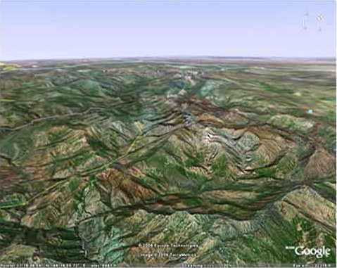

Teröristin Coğrafyası; Şemdinli üçgeni

APO vampiri Şemdinli Üçgenine özel bir önem veriyor ve PKK’nın “Her şey bir parça özgür vatan toprağı için” sloganındaki özgür vatanın Şemdinli olacağını söylüyordu. Şemdinli, Çukurca ve Uludere güneyindeki Irak toprakları ile bağlantıyı kuran ve gerilla faaliyetlerinin yoğunlaştığı bir alandı.
A. Cem Ersever, Üçgendeki Tezgâh, 1993
Dağdakileri tanımak yetmiyor terörü ve teröristi anlayabilmek için. Teröristin kilit coğrafyasını da bilmeniz gerek, yaşadığı alanı. Bu kilit coğrafya Hakkari, Van, Sımak coğrafyasıdır. Saydığım üç il, ülkemizin İran ve Irak’la olan müşterek sınırları içerisindedir. PKK’nın Irak’tan aldığı gücü, İran’ın sınırdaki kaçakçılığa ve kısmen de olsa bizim teröriste verdiği desteği dikkate aldığınızda, bu coğrafyanın ne denli önemli olduğunu da görmüş olursunuz. Bu coğrafyanın düğüm noktası Şemdinli Üçgeni’dir. Bu düğümü çözebilsek diğerleri de çorap söküğü gibi gelir ama nedense biz Şemdinli’yi bir türlü anlayamadık, anlatamadık. Şemdinli için kitap bile yazdık ama kimse anlamak, istemedi, gerçeği görmek kimse istemedi.
İlk terörist saldırısı Şemdinli’ye yapıldı, 198 4’te. Neden?
1992 Ağustos’unda alan, Eylül ayında Aktütün jandarma hudut bölüğü üç yüzden fazla teröristin imha amaçlı saldırısına uğradı. Aynı yıl ve aynı ay, katil Osman Öcalan’ın yönetliği altı yüzden daha kalabalık bir terörist grubu. Derecik jandarma karakolu ile aynı yerde konuşlu Dağ ve Komando Taburunun bir bölüğüne saldırdı. Teröristler çok pahalı ödedi bu haince tuzağı ama çok şehit verdik biz.
1992 - 95 arasında da sayısız saldırılar yapıldı Şemdinli’ye. Ortaklar Karakolu’na saldırı, Ketina’da pusu, polis noktasına saldırı, Bembo’da pusu, Alan Karakoluna’na saldırı, Umurlu Karakolu’na saldırı, Durak Karakolu’na saldırı, Aktütün taciz, Yeşilova taciz, Şemdinli taciz, yola mayın, asker şehit, korucu şehit. Teröristlerin Şemdinli’yi hedef alarak yaptıkları bu saldırılar saymakla bitmez. Ta günümüze kadar geldi bu eylemler. Peki niye? 1984’te de Şemdinli gündemdeydi, yıl oldu 2007 Şemdinli yine gündemde. Peki neden?
Üçgendeki Tezgâh isimli kitabında Binbaşı Ersever de dikkatleri bu bölgeye çekme çabası içindedir, haklıdır. 1992 PKK stratejisinde. Botan - Behdinan savaş hükümeti kurma planları vardır, doğrudur. Botan; Hakkari - Şırnak, Behdinan ise bu iki İlimizin güneyindeki Irak sınır boyudur. Ersever kitabında bir üçgenden bahseder. Aslında bu üçgen Şemdinli’dir ama nereden baktığınıza göre değişir. Çok yukarılardan bakarsanız, Van - Hakkari ve Şırnak’ı görürsünüz. Biraz daha aşağı inerseniz karşınıza Van ve Hakkari çıkar. Bunu sırasıyla, Haşkale - Yüksekova - Şemdinli üçgeni izler. Daha da yakından bakarsanız Şemdinli’yi görürsünüz; Şemdinli Üçgeni. Neden Şemdinli:14
Şemdinli, Çukurca ve Uludere’den daha fazla sınır hattına sahiptir.
Van ve Hakkari’ye açılmaktadır.
Sadece Irak değil İran üzerinden de yönelmek mümkündür.
Van ve Hakkari üzerinden yönelmek, ablukaya almak ve tecrit etmek için planlanmıştır. Coğrafyası gerilla Savaşı’na çok müsaittir. Manevra alanı çok geniştir.
Geri cephe imkanları her bölgeden daha fazladır. Düşürüldükten sonra savunma yönünden kolaylıklar mevcuttur.
Bunların hepsi doğrudur. Ancak PKK için Şemdinli’nin bir diğer önemi, kuzey Irak’taki Hakurk kampının varlığından ileri gelir. Bu nedenle PKK, Hakurk ana karargâhını 1991’den bu yana hiç terk etmemiştir. Onca operasyona rağmen Hakurk hiçbir zaman, imha edilememiştir. İlk kapsamlı operasyonun Osman Pamukoğlu Paşa komutasında yapılmasına, birçok teröristin öldürülmüş ve onca silah, cephane ele geçirilmiş olmasına rağmen PKK Hakurk’ta çökertilememiştir. Neden?
Bu bizim zayıflığımızdan değil inanın, Hakurk coğrafyasının zorluğundandır. Hakurk’un, Hakurk olabilmesi için PKK’nın Şemdinli’de etkili olması, Şemdinli’nin de Şemdinli olabilmesi için Hakurk gibi bir stratejik alanın Irak kuzeyinde olması gerekir. Şemdinli coğrafyasını bilmeden terörist coğrafyasını anlatmak güç olur. Terörist coğrafyasını bilmeden Şemdinli üzerinde değerlendirme yapmak ise yanlış olur. Buna rağmen kimileri çıkar, Şemdinli’de meydana gelen terörist eylemleri değerlendirmek maksadıyla;
- Efendim, zaten önceden de burada isyan olmuştu, der ve terörün nedenini geçmişe bağlar.
Siz gerçeği bilemediğiniz için susarsınız. Çünkü Şemdinli size çok uzaktır. Kimileri de;
- Buradaki aşiretlerin Irak kuzeyindeki aşiretlerle yakın akrabalık ilişkileri var, der ve devam eder:
- Efendim, Şemdinli halkı zaten Barzani’ye sempati duyar, terörün kaçakla ilişkisi var, der ve terörü aşirete, kaçakçılığa bağlar. Siz yine susarsınız. Siz sustukça onlar konuştukça konuşur ve Şemdinli’de meydana gelen olayları size öcü gibi gösterir. Siz de çaresiz inanırsınız. Dedim ya Şemdinli size çok uzaktır, gerçeğe de uzak olduğunuz için susarsınız. Sadece siz olsanız ne gam, garip Şemdinli de susar. Zira Ankara da ona çok uzaktır sesini duyuramaz. Üstelik sesini çıkarmaya da korkar masum Şemdinli. Bir yanında teröristler vardır, meydanı boş bulup bağırıp çağıran, diğer yanında ise devlet, “Ne oluyor orada, yoksa başkaldıran mı var,” deyip kızan, iki arada bir derede kalır Şemdinli, ne yapacağını bilemez.
İşte planlanan oyun da budur; İkinci devrede gerçek oyuncular yerlerini alır, bir taraftan İran, bir taraftan kaçak ağaları, bir taraftan Barzani ve Talabani, diğer taraftan da PKK. Şemdinli neylesin sarılınca dört bir yanı? Bu PKK, bu Barzani, bu Talabani ve de kaçakçı ağaları niye elini eteğini çekmez Şemdinli’den? Sizce mesele, önceden çıkartılmış İsyan ya da aşiret bağları veya teröre sempati duyulması mıdır? Bizce hayır! Asıl mesele, Şemdinli’nin fizikî konumu, coğrafyası, kaçakçılık ve sınırların kontrol altına alınamayışında yatar. Irak ve İran sınırları Şemdinli üçgeninde birleşir. Bu üçgenin sırrı bir çözebilse diğerleri çorap söküğü gibi gelir ama çözülmez bu sır, çünkü istemezler.
Şemdinli’yi terörist coğrafyası yapan nedir? En başta fiziki konumu gelir; üçgendedir, İran ve Irak’a geçişler kolaydır, hudutları zorludur, korunması güçtür. Atlama taşıdır Şemdinli; buradan kolayca Hakkari ve Van’a, Çukurca üzerinden Şırnak’a kolayca açılabilirsiniz. Hakkari ve Van’a açılmak önemlidir çünkü buralar kaçakçılığın merkezleridir. Şırnak önemlidir çünkü yurt içine Cudi ve Gabar dağları üzerinden yayılabilirsiniz. Neden Şemdinli? Çünkü geri çekilmek kolaydır hem İran’a hem Irak’a.
Bu coğrafyanın ikinci özelliği dağlarıdır; Balkayalar, Leylek Dağı, Çarçele, Beyaz Dağ, Şehidan Dağı, Çimen Dağı, Mezargediği ve Karadağlar. Her yerde dağ var diyeceksiniz, doğrudur, ülkemiz dağlık bir bölgedir ama bu saydığım dağlar Şemdinli’de öylesine sıralanmıştır ki, birinden diğerine sek sek oynar gibi geçebilirsiniz. Bu oyunun nasıl oynandığını size anlatayım.
Güneyde PKK’nın ana üssü Hakurk’tur. Hakurk’tan kuzeye doğru çıkın, Ari düzlüğünü geçin, Hacıbey sınırını atlayın, Gasto’ya gelirsiniz, iki saatlik yürüyüş mesafesi, teröristlerin ülkemize giriş kapısı. Gasto kuşun uçmadığı bir yerdir, kuytudadır, kimse gelmez oralara, rahat edersiniz. Bundan sonra işler kolay; Karadağı aşıp Silo yaylasını geçtiğinizde Balkayalar’a ulaşırsınız, bu birinci yoldur.
Gasto’dan Mezargediği’ne çıkın, oradan da Zagros’a geçin. Zagros İran’dadır ve burada PKK’nın çadırlı kampı bulunur. Bu da ikinci yoldur.
Sağ ve de salimen yolculuğunuzu tamamladıysanız, gerisini merak etmeyin; Balkayalar sizi Leylek ve Çarçele dağlarına, Zagros ise Çimen, Dumanlı, Kralın Kızı ve Şehidan dağlarına kolayca ulaştırır. Çarçele’den Hakkari ve Şırnak’a, Şehidan’dan Yüksekova, Başkale ve Van’a atlayabilirsiniz. Sizi rahatsız eden olursa hiç endişelenmeyin; Çarçele’de Eşek Kapısı üzerinden İrak’a, Şehidan’dan da İran’a kaçabilirsiniz. Bu saydıklarım inanın bir gecelik yoldur, dağlar yüksektir, serindir, su kaynakları vardır, rahat edersiniz.
Şemdinli’yi terörist coğrafyası yapan üçüncü husus ise PKK’nın yurt dışı kamplarıdır ve bunlar Şemdinli’yi üç koldan kuşatmıştır. Güneyde Hakurk, doğuda Jerma ve batıda Basyan kampları yurt içindeki teröristleri her yönden destekler. Leylek, Çarçele ve Balkayalar dağları Basyan’a, Şehidan, Çimen, Kralın Kızı, Dumanlı dağlar Jerma’ya, Zagros ve Mezargediği ise Hakurk kamplarına açılır, işte üçgenin bir sırrı budur; Iran ve İrak hudutları, dağlar ve kamplar Şemdinli’yi terörist coğrafyası yapar.
Yıllarımız dağlarda geçti ama Şemdinli gibi bir ilçe görmedim ben. Küçük bir ilçede dört PKK kampı bir arada görmedim hiç. Van’ın en hassas ilçesi Gürpınar da bile, adına kamp denirse eğer bir tek Tirsin vardı. Çatak, Başkale’de de kamp görmedim. Ama Şemdinli’nin dört bir yanı terörist kampı, hem içte hem dışta.
1992 ve sonrası Şemdinli’de yapılan operasyonlarda, Balkayalar, Leylek Dağı, Çarçele ve Beyaz Dağ’da olmak üzere dört PKK kampı bulunmuş ve içindekilerle birlikte imha edilmiştir. Bunlar bizim sınırlarımız içinde olanları, bir de bunlarla bağlantılı onlarca sınır ötesi kampları da var. Kamp deyince aklınıza öyle yerleşik tesisleri getirmeyin; hava keşfiyle görülmeyecek, İran ve Irak sınır boylarına yakın olacak, köylüden uzak olacak, ağaç dallarıyla yapılmış yeme ve yatma yerleri olacak, kamplar arası ulaşım olacak, hemen hemen hepsi bu işte. Dört kampı içinde barındıran bir coğrafyadır bu.
Mezargediği, ülkemizin en güney doğu ucundadır, üçlü sınırda, Zagros’un eteklerinde. Bu noktaya çıkın ve Şemdinli’ye bakın; bulunduğunuz yerden aşağı inen bir vadi doğruca sizi ilçe merkezine götürür. Sola bakarsanız Irak, sağa bakarsanız İran’ı görürsünüz. Irak sınırını Hacıbey Çayı çizer, hani şu teröristlerin balık yediği yer15. Kuzeye açılım Zagros’tan başlar, PKK’nın çadırlı kampı. 901ı yıllarda İran, PKK’ya açık açık destek verirdi ve teröristler Doğubeyazıt’tan Mako’ya geçer, sınır boyunca güneye inerek Zagros’a gelir, bir çay molasını müteakip 2801 Rakımlı Tepe’den aşağı sarkıp Hakurk’a ulaşırlardı. Burada eğitimlerini tamamladıktan sonra görev bölgelerine yani Zagros’tan Urumiye’ye, Şehidan’a, Yüksekova sınırına araçlarla taşınırdı. Şimdi ise durum farklı; Amerika var Irak’ta ve PKK’ya destek veriyor İran’a karşı, İran ise öfkeli artık PKK’ya. Dolayısıyla teröristlerin Zagros’tan Yüksekova’ya doğru araçla gidebileceklerini pek sanmıyorum, olsa olsa sınırın İran tarafındaki patikayı izleyecekler, Çimen Dağı’nın doğusundan geçip, Dumanlı Dağ ve Kral’ın Kızı’nı aşıp Jerma kampına ulaşacaklardır. Bu da epey yol eder ama tehlikesizdir.
Jerma’ya ulaştıktan sonra işleri kolay; ister Soğuksu’yu geç, Durak’ı geç Bembo’ya çık, oradan Gülle Tepe’ye gel, ister Mağaraönü’nden geç, Kayalar üzerinden Şemdinli’ye gir, nasıl isterseniz. Bembo bir üç yol ağzıdır; kuzeyi Yüksekova’ya, batısı eski Çarçele kampına, güneybatısı Konur vadisi üzerinden Basyan kampına açılır yani Irak’a. Jerma, Bembo, Konur ve Basyan güzergâhı teröristlerin ana geçiş istikametidir, İran’ı Irak’a bağlar. Güvenli bir yoldur; genelde gece yürüdükleri için kimse rahatsız etmez onları. Ederse ne olur? Hiçbir şey olmaz; istikamet değiştirir Bembo’dan Çarçele’ye çıkar, Eşek Kapısı’nı geçer, gene Irak’a ulaşır.
Şemdinli dağlık bir bölge, gizlenmek kolay. Şemdinli üçlü sınırda, Irak ve İran’a geçmek kolay. Şemdinli ana kaçak yollarına yakın, Yüksekova hemen yanı başında. Şemdinli bir üçgen, çıkmaz sokak, tek girişi ve tek çıkışı var. Şemdinli’de hudutlar dağlardan geçer, koruması kolay değil. Şemdinli’ye Urumiye yakın, Erbil yakın, yurt dışı lojistik destek kolay. Şemdinli’de terörist kamplarından birbirine geçiş ve irtibat kolay; Çarçele kampı Şehidan’ı görür, Hakurk’u görür, Balkayaları, Leylek Dağı’nı görür, Zagros’u görür ve teröristler kolayca haberleşir. Teröristler hep yukarılarda olduğu için aşağıda kalan güvenlik güçlerini kolay takip eder, ona göre tedbirini alır. Ülkemizde bu arazi özelliklerine sahip Şemdinli’den başka bir arazi yoktur. Teröristler için Şemdinli’yi kontrol allına almak ne kadar kolaysa, askerler için de bu iş o kadar zordur. Bu nedenle PKK Şemdinli’yi bırakmaz.
PKK, bu tipik terörist coğrafyasında yol ve kamp güvenliğini sağlayabilmek için sayısız saldırılar yapmıştır Şemdinli’ye, koruculara, askere, karakollara, saymakla bitmez bunlar. Başarmıştır da bu işi çünkü, zamanında kaçakçılara karşı açılmış küçük küçük jandarma karakolları güvenlik gerekçesiyle kapatılmıştır. İyi bir asker araziyi iyi bilir, coğrafyayı etüt eder, teröristlerin yaklaşma istikametlerini ortaya çıkarır ve tedbir alır. Zamanında asker bunu yapmış ve Mezargediği’ne karakol açmıştır ama şimdi o karakol yok artık, kapalı. Türk bayrağı gönderde dalgalanmıyor, törenle indirildi. Hemen aşağısında Tanyolu karakolu varmış, şimdi kapalı, tıpkı onun da hemen aşağısındaki Hazne karakolu gibi. Meydan teröristlere bırakılmadı elbet, başka güvenlik tedbirleri var şimdi o bölgelerde. Ama çok önemliydi bu karakollar, Mezargediği-Şemdinli istikametini kapatıyorlardı. Şimdi yoklar. Acı bu bizim için, inanın bayrağı gönderden indirmek çok acı.
Hakurk-Derecik istikametini tutan gene küçük küçük karakollarımız vardı, Horyürek gibi, Samanlı gibi. Onlarda yok artık, kapatıldı. Ya ormancık? Basyan kampını gözleyen, ülkemize girişi kapatan Ormancık karakolu, o da yok. Tıpkı Mağaraönü karakolu gibi, Jerma kampını gözleyen ve İran’dan girişi kapatan karakol, o da yok, kapatıldı. Başka çözüm bulamadık, saldırılara açık karakollardı bunlar. Saldırı olmasın diye kapattık. Doğru mu yaptık, bilemiyorum ki, içim yanıyor benim, karakol bu, devletin halka açılan kapısı. Saldırı olmasın diye karakol kapatmak? Saldırıyı yapan kim? PKK. Nerede bunlar? Hakurk’ta, Jerma’da, Basyan’da. Karakol kapatacağımız yerde, bu kamplara girip PKK’yı yok etseydik ya, onca şehidi vermezdik inanın. Niye yapmadık ki bunu?
Şemdinli’yi anlarsanız, coğrafyasını bilirseniz, inanın terörle mücadele ne demek, ortaya çıkacaktır. İşte bizim teröristler bu coğrafyada yaşar. Coğrafyayı iyi bilirseniz, kaçak ve terör arasındaki ilişkiyi kurmanız da kolaylaşacaktır. Bu coğrafya kilit coğrafyadır. Siirt’teki, Şırnak’taki, Van’daki, Tunceli’deki teröristi terörist yapan Şemdinli coğrafyasıdır. Böyle bir coğrafyaya para, güç, seçilmişler ve atanmışları koyduğunuz zaman, otuz yıla yakın bir zamandır süre gelen terörün neden bitmediği ortaya çıkar.
İşle terörist coğrafyası budur; güvenli yollar, güvenli dağlar, şehir merkezleriyle irtibat, kamplara kolay ulaşım, güvenli barınaklar, sağlıklı lojistik ve ikmal, eylem sonrası yurt dışına kaçış kolay. İşte bu tür coğrafyalar teröriste istediği avantajları sağlar. Bu avantajı lehinize çevirmenin yolu alan kontrolünden geçer ama zordur bu iş; geceleri yürüyüp pusu atacak, gündüz istirahat edeceksiniz, her gece onlarca kilometre yol eder bu, herkes dayanamaz. Küçük ama özel birlikler gerektirir, yüreği kuvvetli bileği kuvvetli olan. ‘90’lı yıllarda bunları da yaptık ama yetmedi ne terörü bitirmeye ne de teröristi.
Gelelim bu coğrafyadaki kaçağa. Şemdinli’de güçlü olduğunuz zaman Yüksekova ve Başkale’de yapılan kaçakçılığı da kontrol altına alırsınız. Kaçak demek para demektir; çok para, kolay para, kanlı ve kirli para. Hudutları gördünüz, o dağlarda inanın insan korkar yalnız kalınca. Hudut dağlardan geçer, çaylardan geçer. Her şey gelir her şey geçer, hududu asker gücüyle koruyamazsınız. Huduttan ne geçer? Ne istiyorsanız o geçer.
Kaçak için sorun yok, geçer. Terörist yalnız para istemiyor ki, otorite istiyor hem de devlete ait olan otoriteyi. Ne yapacak? Nasıl alacak? Kaçaktan aldığı onca para bir yana, teröristin de terörist olabilmesi için ve de varlığını kabul ettirebilmesi için eylem yapması lazım. Eylem yapacak, halkı sindirecek. Eylem yapacak, savunmaya zorlayacak askeri. Ona eylem lazım yaşayabilmesi için ama çok ses getiren, çok az zayiatla yapılacak bir eylem, üstelik en kısa sürede.
Eylem yaparsanız ne olur? Otorite olursunuz.
Otorite olursanız ne olur? Kaçağı kontrol altına alırsınız.
Alsanız ne olur? Sayamayacağınız kadar, rüyanızda görseniz inanamayacağınız kadar para kazanırsınız.
Kazansanız ne olur? Tüm örgütü, yapılanmayı, siyasi kanatları, yayınları, televizyonları, silahları finanse edersiniz.
Etseniz ne olur? Devlet otoritesinin yerine geçersiniz, hem de tüm dünyanın özellikle Avrupa’nın gözü önünde, demokratik rejimlerde seçimleri kazanarak.
Şemdinli üzerinde oyunlar niye sanırsınız? Dışarıda kileri içeri almak için af görüşmeleri, Avrupa’nın baskısı niye sanırsınız? Neyse, biz işimize bakalım. Herkes görevini vatan sevgisi, bayrak sevgisi, ulus sevgisi dolu olarak yapsaydı, zaten bu kitaba konu olanlar yaşanmazdı hiç!
Ben sizi anlıyorum; Şemdinli denince aklınıza; kaçakçı, terör, uyuşturucuyla iç içe girmiş Türkiye’nin en güneydoğu ucunda bir üçgen geliyor çünkü harita öyle diyor. Elbette siz, bir yandan basın bir yandan uzmanlarımızın anlattıkları sonucu bu üçgeni, şeytan üçgeni gibi düşünüyorsunuz. Böyle düşünmekte de haklısınız ama gerçeği bilmek mi istiyorsunuz? Şemdinli’de bataklık yoktur, sivrisinek de yoktur. Orada insanlar yaşar. Türk bayrağı gölgesinde İstiklal Marşı söylenir okullarında. Susadıklarında onlar da su içer kan değil. Giden canlarına gözyaşı dökerler, yanık türküleriyle. Sevgi vardır yüreklerinde ama belli etmezler çünkü bilemezler sevgi dolu sözlerin nasıl fısıldandığını, öğretilmemiştir. Terör zirveye ulaştığında dahi teröristlere geçit vermemiştir halk. Devlet varsa terör yoktur da ondan. Yok ise devlet, ne yapsın garip Şemdinli?
Bir kusuru varsa Şemdinli’nin, bize çok ama çok uzak olması. Şemdinli dağlık, her iki tarafı sınır İran’a, Irak’a, sorunları çoktur ama bir özelliği vardır Şemdinli’nin onu her şeyden ayıran; Şemdinli bizimdir ne İran’ın ne de Irak’ın ne teröristlerin ne de Barzani’nin. Onun da bizden başka kimsesi yoktur. İyi bilmek lazım bunu. Şemdinli’yi unutmamak lazım.
Şemdinli’yi anlamak demek, Şemdinli’ye hesap sormak demek değildir. Şemdinli’yi anlamak demek; orada devlet olmak demektir, terk etmek değil. Şemdinli taktik olarak da stratejik olarak da, istihbarat ve kaçakçılık açısından da asla göz ardı edilmemesi gereken hassas bir bölgedir. Bu hassasiyeti lehimize çevirmenin yolu, devletin tüm güçleriyle orada varlığını göstermesinden geçer.
Şemdinli coğrafyasının kilit ismi Hakurke’dir. Diğer kamplar ve geçiş güzergâhları Hakurke’ye göre şekil alır. Çarçele’den çıkıp Gülle Tepe üzerinden bir gecede Şehidan’a, Leylek Dağı üzerinden bir gecede Basyan’a, Silo yaylası üzerinden bir gecede Hakurke’ye, Beyaz Dağ üzerinden bir gecede Mezargediği’ne ulaşabilirsiniz. Teröristler de böyle yapar zaten, iki gecede Şemdinli’yi kuşatan kamp yerlerini bir bir dolaşırlar. Dolayısıyla, teröristler Şemdinli bölgesindeki bir eylem hedefine iki gecede istedikleri kuvveti toplayabilir, baskın yapabilir ve de kolayca kaçabilir. Nasıl ki terörist coğrafyasını yapan Şemdinli ise, Şemdinli’nin sırrı da Hakurke’de yatar.